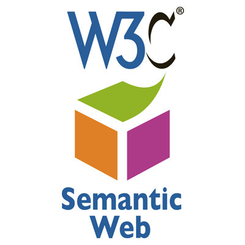

Retour a l'index
Page suivante
Rose Dieng-Kuntz a travaillé 23ans (jusqu'à sa mort) à l'INRIA (l'institut national de recherche en intelligence artificielle) sur le partage de connaissances sur le web, plus spécialement dans le web sémantique*.
Elle écrit avec la collaboration de plusieurs autres éminents chercheurs plusieurs livres :
Designing cooperative systems : the use of theories and models Computational conflicts : conflict modeling for distributed intelligent systems Knowledge management and organizational memories Leading the Web in concurrent engineering : next generation concurrent engineering

Elle reçoit le prix Irène-Joliot-Curie en 2005 et est nommée chevalier par la légion d'honneur.
Son nom est donné à une rue dans le parc d'innovation de la Chantrerie, à une place sur le campus de Paris-Saclay, à l'un des amphithéâtres des nouveaux locaux de Télécom Paris, à une annexe du lycée d'excellence Birango Diop au Golf Sud ainsi que le cours où se situe l'institut de recherche informatique de Toulouse.